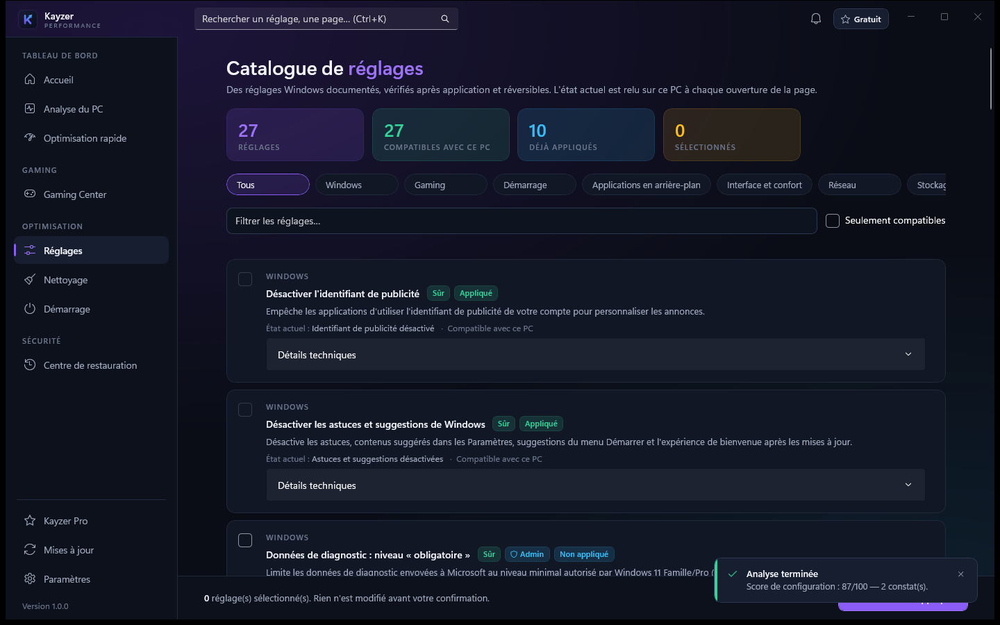
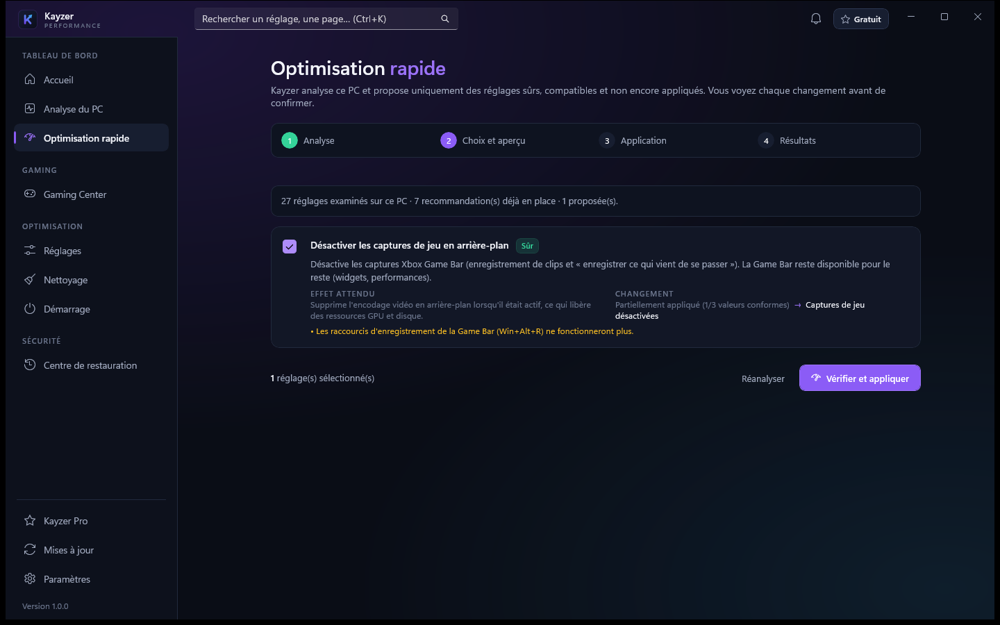

Analyse du PC
Inventaire du matériel, mesures en direct, température GPU sur les cartes NVIDIA et un score de configuration dont chaque point est justifié.
Kayzer Performance, l'optimiseur Windows 11 pour joueurs, analyse votre PC, ne propose que les réglages adaptés à votre matériel, les applique avec une sauvegarde et vérifie chacun d'eux.

La méthode
Rien n'est modifié avant votre confirmation. Vous voyez ce qui va changer, puis le résultat réel sur votre machine.
Processeur, mémoire, stockage et configuration Windows : chaque constat est justifié par une mesure.
Seuls les réglages compatibles avec votre matériel et votre édition de Windows sont proposés.
Pour chaque réglage : l'état actuel, la valeur visée et la façon de revenir en arrière.
Sauvegarde, application, puis relecture sur le PC. Si la vérification échoue, retour en arrière automatique.
Chaque opération est datée dans le centre de restauration et s'annule quand vous voulez.
Le logiciel

Inventaire du matériel, mesures en direct, température GPU sur les cartes NVIDIA et un score de configuration dont chaque point est justifié.
Profils Essentiel, Compétitif, Portable et Avancé, jeux Steam et Epic détectés, GPU choisi par jeu, mesures avant et après.
12 catégories avec estimation avant suppression, dont la Corbeille sur confirmation dédiée. Vos dossiers personnels ne sont jamais concernés.
Mettez en pause les programmes lancés avec Windows grâce au mécanisme natif de Windows : rien n'est supprimé.
L'historique daté de chaque opération et l'annulation de tout ce qui est réversible, même sans licence active.
Chaque nouvelle version est vérifiée (signature et empreinte) avant d'être installée.
Sécurité
Certains optimiseurs gagnent quelques ressources en coupant ce qui protège Windows. Kayzer ne le fait pas.
Comparatif
| Critère | Kayzer Performance | Scripts de forums (.bat, .reg) | Packs « +FPS » tout-en-un |
|---|---|---|---|
| Explique ce que fait chaque réglage | Oui | Rarement | Variable |
| Sauvegarde avant modification | Oui | Non | Variable |
| Vérifie que le réglage a pris effet | Oui | Non | Rarement |
| Annulation réglage par réglage | Oui | Non | Variable |
| Garde Defender, pare-feu et Windows Update actifs | Oui | Variable | Variable |
| Filtre les réglages selon le matériel | Oui | Non | Variable |
Comparaison de méthodes en général, pas de produits précis.
Téléchargement
Au premier lancement, Windows SmartScreen peut afficher un avertissement : cliquez sur « Informations complémentaires » puis « Exécuter quand même ».
Offres
Une licence s'utilise sur un PC à la fois. Pour changer de PC, retirez-la de l'ancien depuis le logiciel.
FREE24
Gratuit
24 h à partir de l'activation
Un essai par installation : réinstaller ne relance pas la période.
Demander un essaiMONTHLY
4,99 €/ 30 jours
Sans renouvellement automatique
À la fin des 30 jours, une nouvelle clé prolonge l'accès.
Acheter 30 joursLe plus avantageux
LIFETIME
24,99 €paiement unique
Sans date d'expiration
Votre clé vous est envoyée après le paiement.
Acheter la licence à vieFAQ
Personne ne peut vous donner un chiffre honnête à l'avance : le résultat dépend du processeur, de la carte graphique, des pilotes, des jeux et de l'état de départ de Windows. Sur un PC encombré, la différence se sent ; sur un PC déjà propre, elle peut être faible. Kayzer mesure votre PC avant et après pour que vous voyiez l'écart réel.
Chaque réglage est sauvegardé avant d'être appliqué, puis vérifié. Si la vérification échoue, Kayzer revient en arrière tout seul. Les rares opérations qui ne s'annulent pas, comme la suppression de fichiers temporaires, sont signalées avant votre confirmation.
Non. Windows Defender, le pare-feu, Windows Update et les services essentiels restent actifs.
Sur Windows 11 64 bits uniquement, éditions Famille et Professionnel. La licence s'utilise sur un PC à la fois.
Après le paiement, votre clé personnelle vous est envoyée. Vous la collez dans l'écran d'activation au premier lancement du logiciel ; elle est vérifiée par le serveur de licences Kayzer.
Pour l'activation, oui. Ensuite, Kayzer vérifie votre licence régulièrement et continue de fonctionner jusqu'à 72 h sans connexion.
Les fonctions concernées se verrouillent. Les réglages déjà appliqués restent en place et le centre de restauration reste accessible pour tout annuler.
Certains réglages touchent des paramètres réservés aux administrateurs. Kayzer les regroupe en une seule demande par opération et n'installe aucun service qui tourne en permanence avec tous les droits.
Installez Kayzer Performance et voyez ce qu'il trouve sur votre PC. Tout ce que vous appliquez reste annulable.